【行者无疆·韶忆长安】 行者篇

”行者无疆 韶忆长安“
成员介绍篇

文溯齐鲁
知遇中原
致旅吴越
拾遗皖徽
从2017年开始，行者们用脚步丈量世界，用真心体会文化。
2019年的寒假，行者们将韶忆长安。在新的旅程开启前，行者们想对你说...

指导老师
邹靓靓
言必信
行必果
1
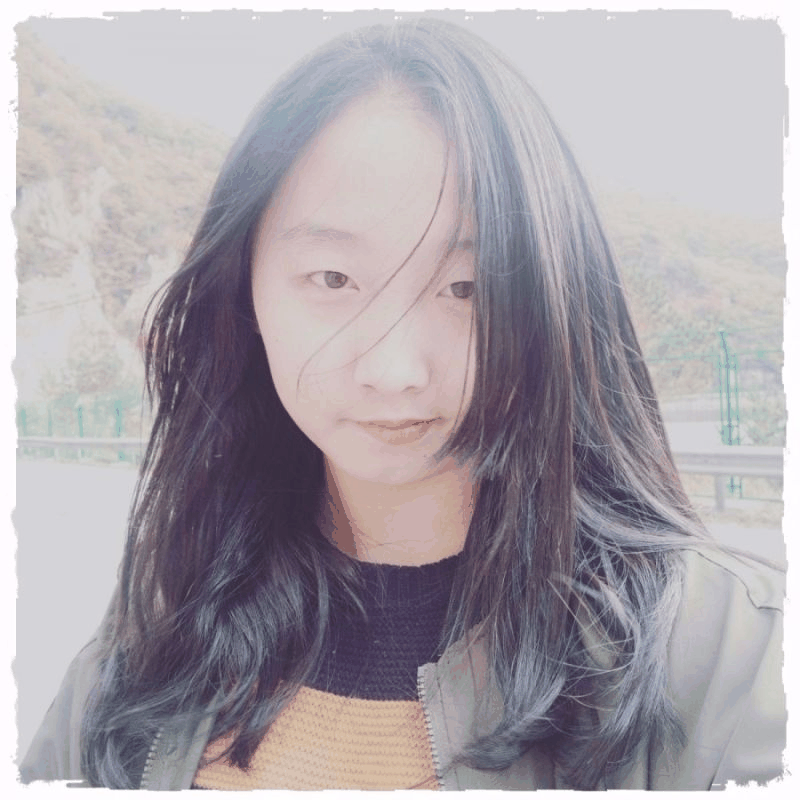
队长 徐菁聪
I exist because you need me☆
-----A thousand times for you.
2

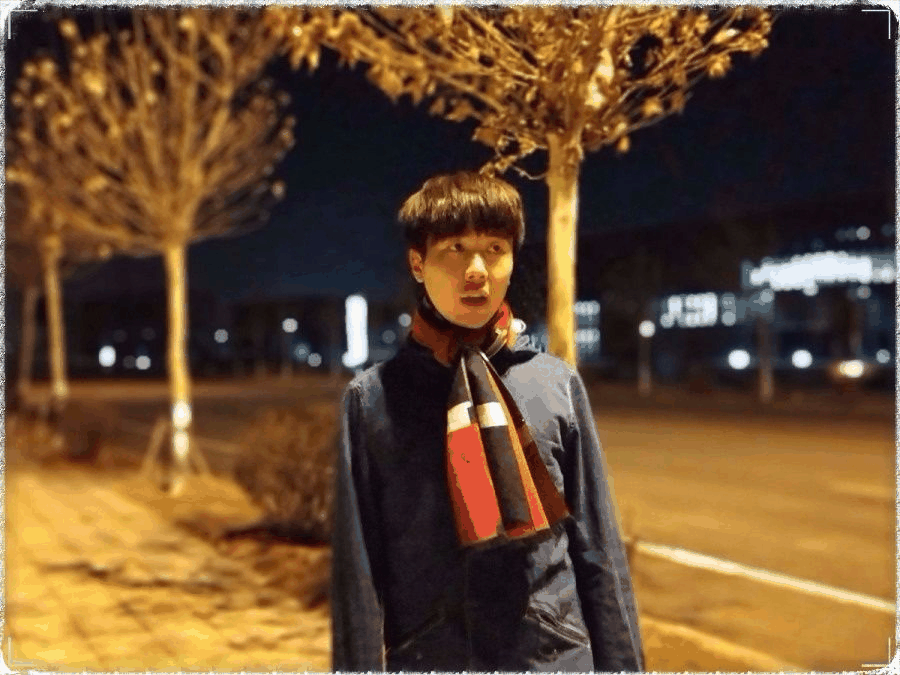
宣传组
邓子孚
我们只愿心怀清欢，以清净心看世界， 以欢喜心过生活，以平常心生情味， 以柔软心除挂碍。
3
白天多读书，书中有你不知道的。
晚上早睡觉，梦里有你想要的。
宣传组 牛直达
4
slowly,
but surely
5
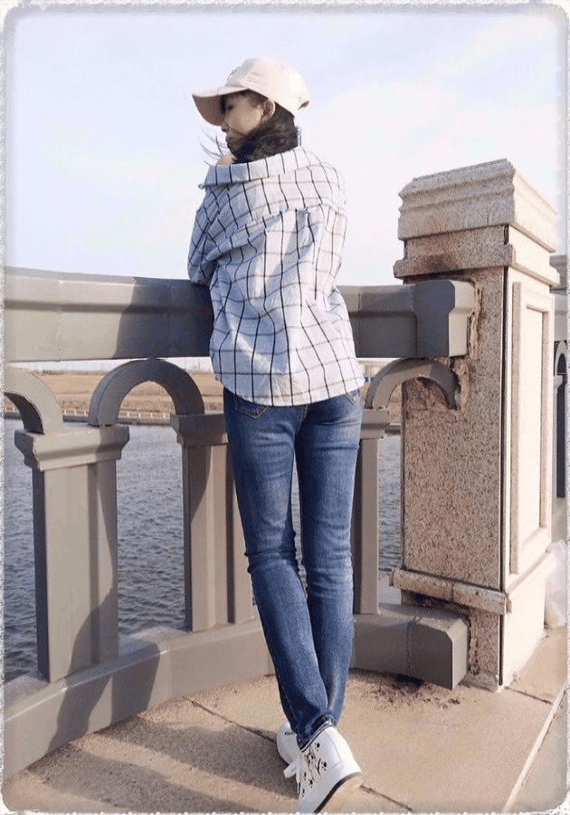
文字组
潘雯雯
不念过往，无惧将来，一切即是最好的安排
6
文字组
张媛媛
步步寻往迹
有处特依依
7
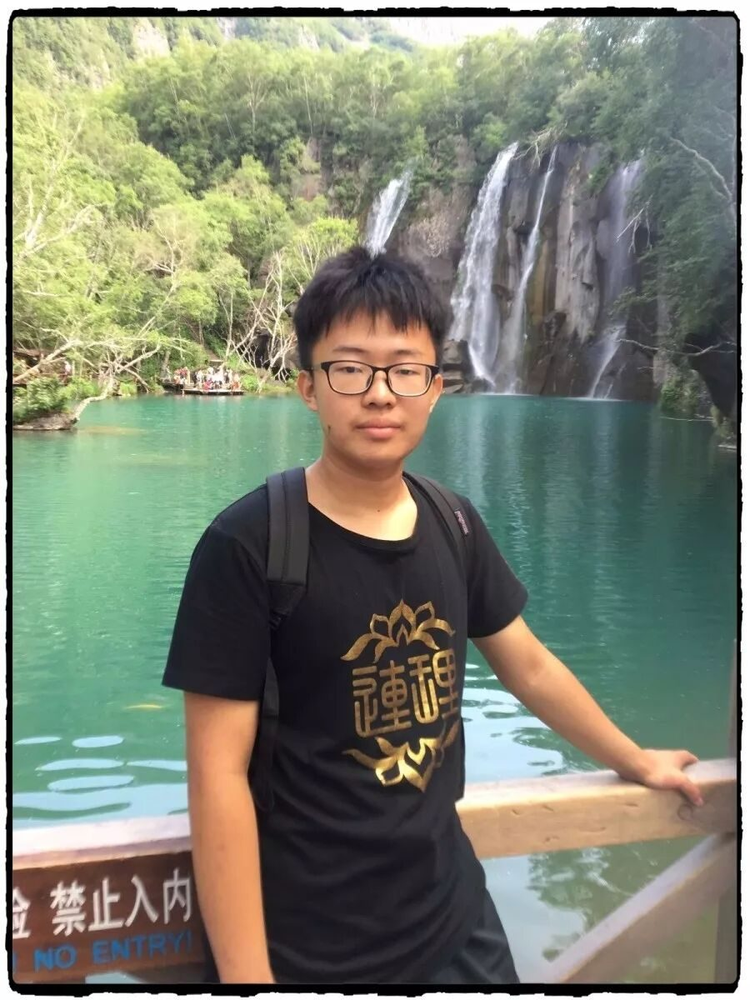
文字组
郭新明
只要你是简单的，
这世界就是简单的。
8
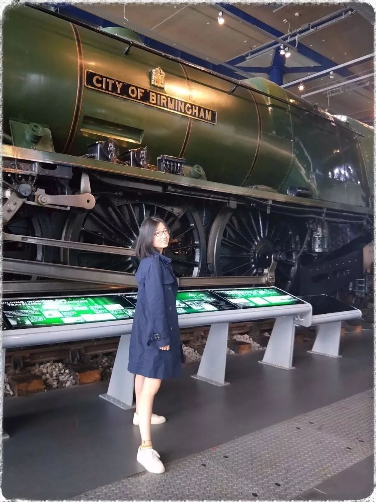
文字组
李竹晴
古之立大事者，不惟有超世之才，亦必有坚忍不拔之志。
9
调研组
宋清风
生活的意义在于教会你看清生活的真相，却依然坚定地热爱生活。
10
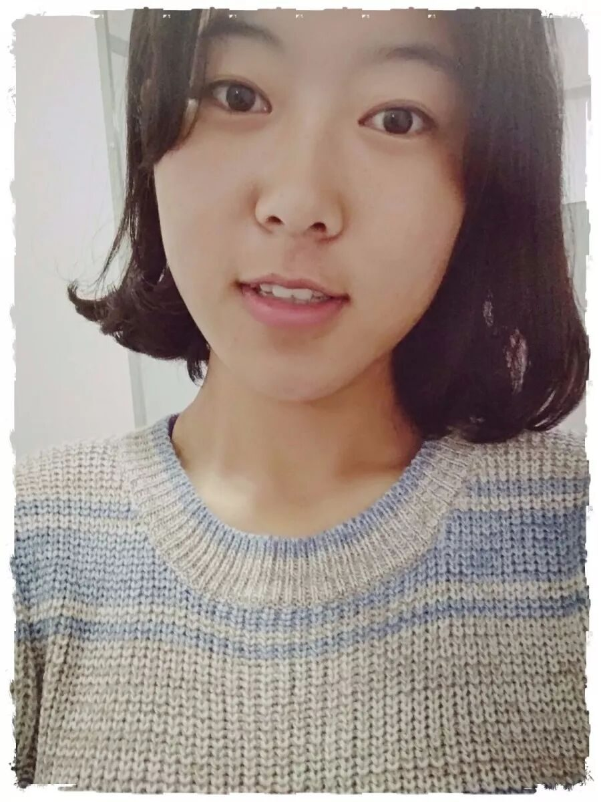
调研组
梁子璇
活在这珍贵的人世间，太阳强烈，水波温柔。
——海子
11
调研组
陈子健
如果你不出去走走，
你会以为这就是世界。
12
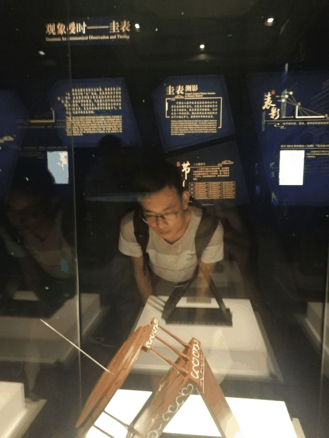
财务组
江新林
驻足。
聆听西安诉说的声音！
13
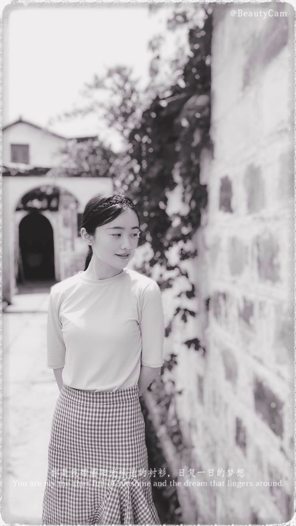
外联组
潘晓青
前进就会产生信念
行者
We keep moving on
14
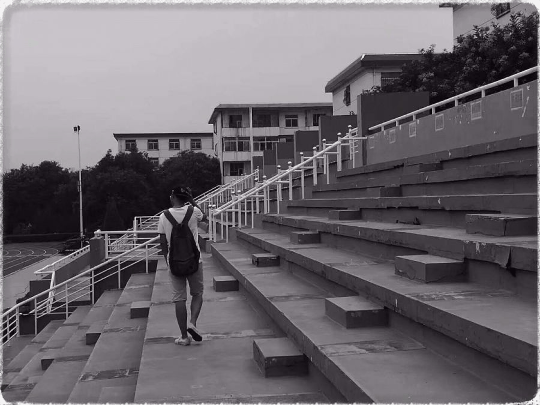
外联组
杨博渊
身体和灵魂总有一个在路上
15
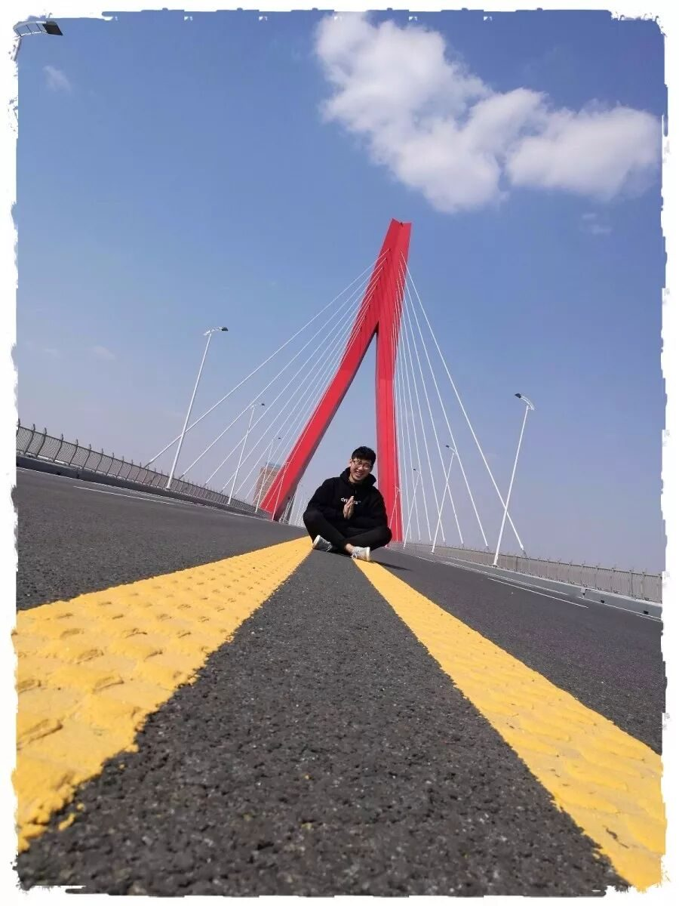
采访组
沈柏宇
有些路只有亲自走过，才能有所收获；
有些事只有切身做过，才能有所感悟。
16
采访组
王金华
历史不只是印刷在课本上，
而是掩埋在大地深处。
17
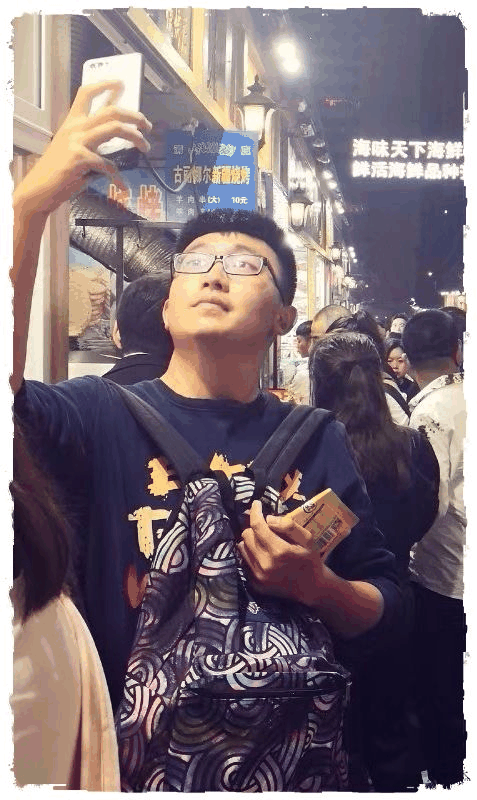
后勤组
刘普昕
读万卷书，行万里路。
行者行在路上，行在心中。
18
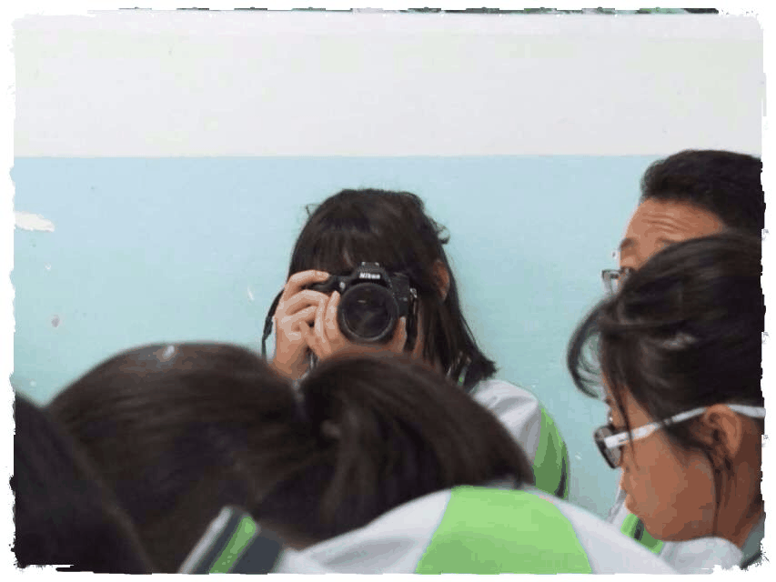
摄影组
王一岚
我们不只是用相机拍照，我们带到摄影中去的是所有我们读过的书，
看过的电影，听过的音乐，爱过的人。
19
摄影组
丛雨晴
有张有弛
不疾不徐
虽千里，吾往矣
一块古老的土地，历史老人镌刻无数辉煌；一座年轻城市，时代之神编织美丽梦想。西安的美、西安的韵、西安的意，魂牵梦萦着每一个行者。西安之旅，你值得期待。
图片丨行者无疆实践团
文字丨张媛媛
责编丨邓子孚
审核丨邓子孚 潘雯雯
行者无疆实践团
QQ：2758025831
随行者一起认识世界
长按二维码关注